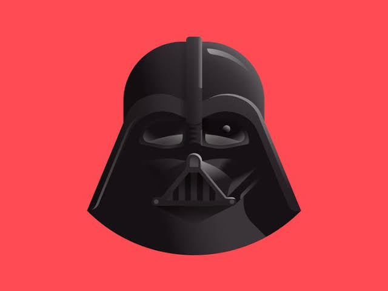

Hvězdné války
Ta ta tá ta ta dá ta ta dá!

Hvězda smrti
Byla obří bitevní stanice sférického tvaru ve fiktivním světě Star Wars. Po celou filmovou sérii byly postaveny pouze dvě. Tato obří stanice byla neblaze proslulá svou schopností ničit celé planety. První z nich měla v průměru 120 kilometrů, druhá již měla 160 kilometrů v průměru.
Je to mistrovská a skoro dokonalá zbraň, kterou navrhla vědkyně z Omwatu Qwi Xux. Je schopna skoku do hyperprostoru a díky superlaseru může zničit planetu jediným výstřelem (i když druhá Hvězda Smrti byla zničena ještě před demonstrací své plné síly). Planetární štíty, které by jinak odrazily celé flotily, byly neúčinné proti takovéto zbrani...
Zjisti více